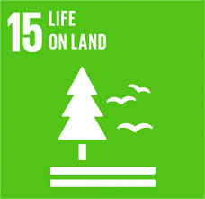

Combat desertification-
Combat Desertification is a type of land degradation in which a relatively
dry land region becomes increasingly arid, typically losing its bodies of water as well as vegetation and wildlife.
Headquarters- bonn,Germany
Founded - 1994
Signed- 14 October 1994 to 13 october 1995
Locations - Paris, France and New York, United States of America
Drafted 17 June 1994
What is meant by forest management?
Forest management is the process of planning and implementing practices for the stewardship and use of forests to
meet specific environmental, economic, social and cultural objectives. It deals with the administrative, technical
and scientific aspects of managing natural and planted forests.
